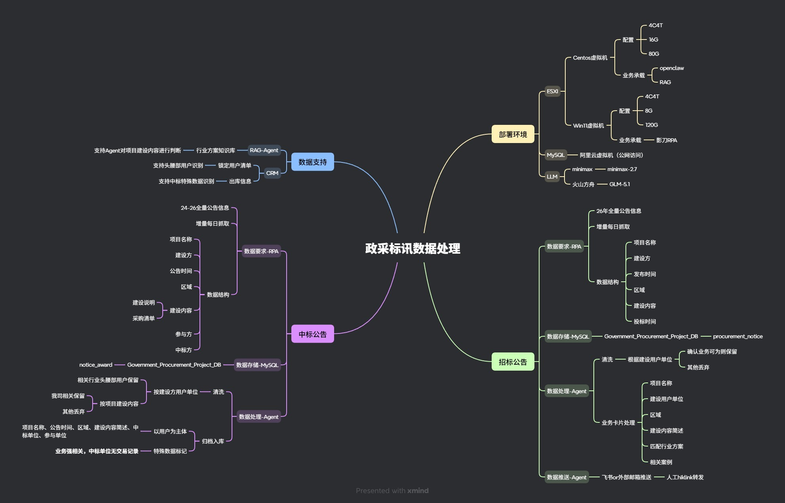
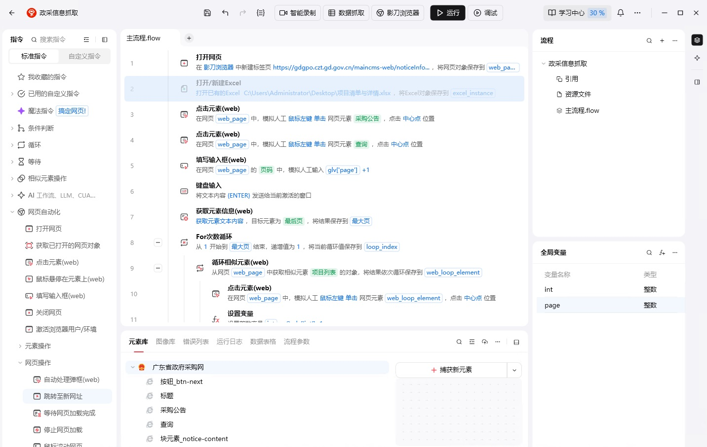
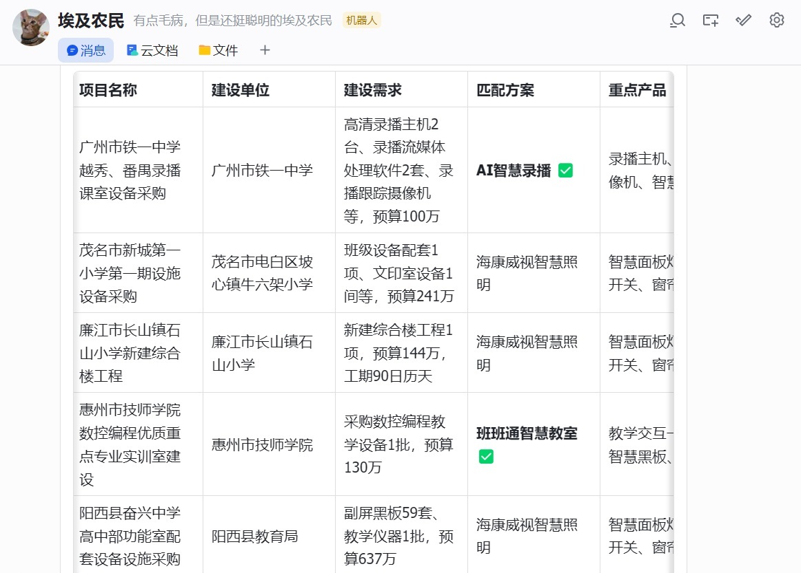
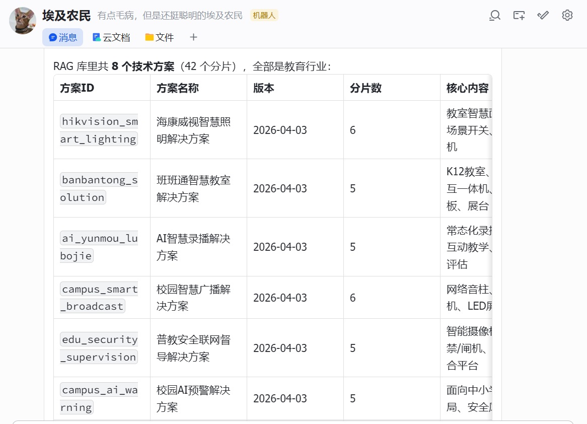
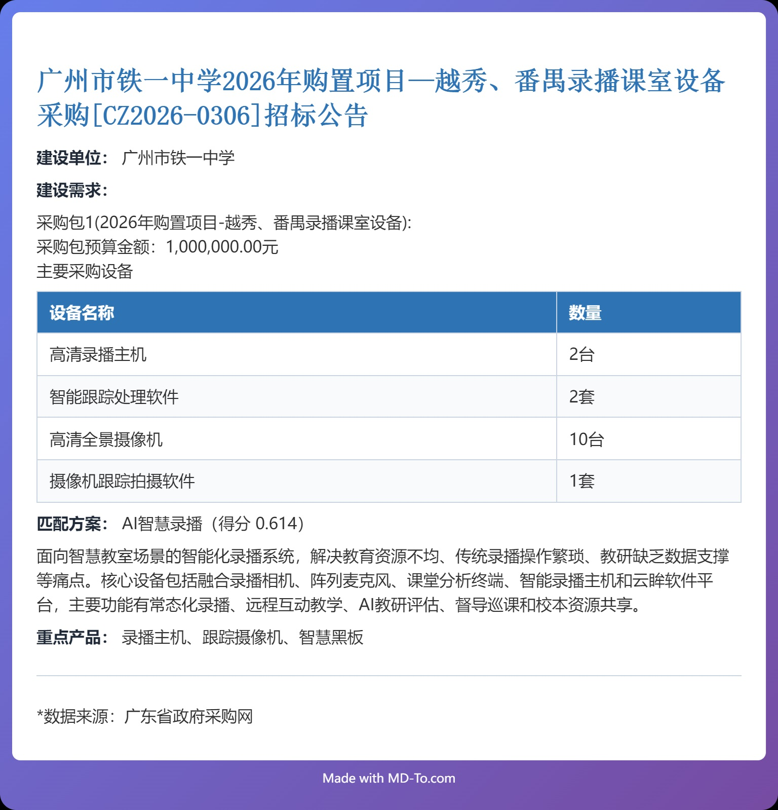
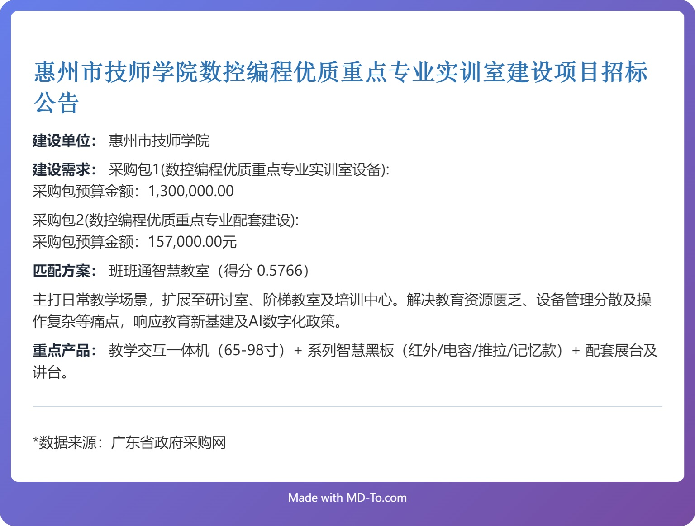
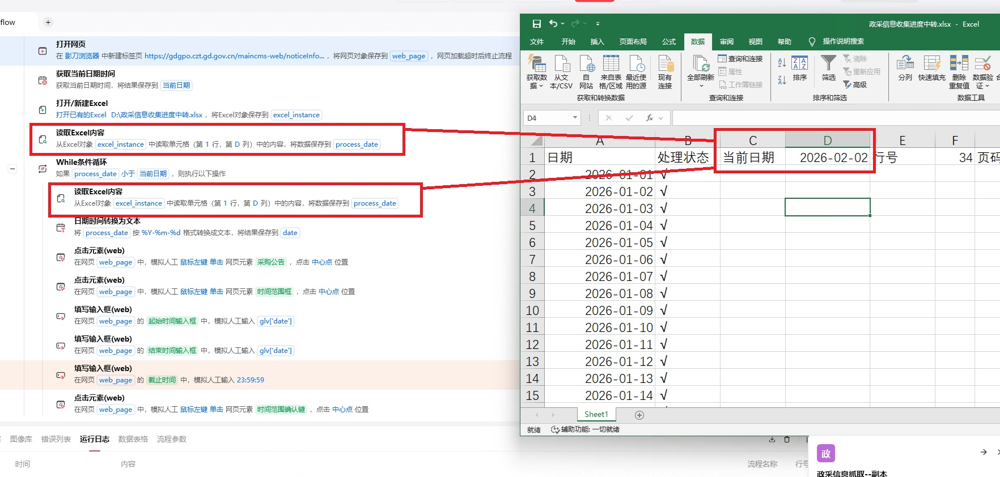
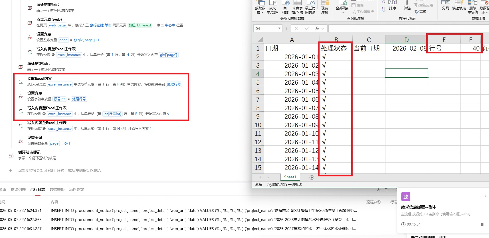
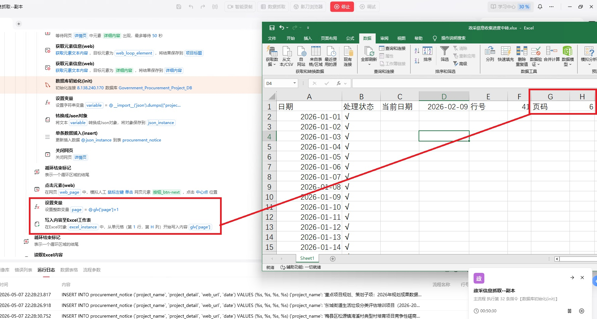

基于影刀RPA+AI Agent的自动化标讯数据处理
设计目标
1-每日自动从指定标讯网站中，获取招标公告信息，结合内部业务方案进行匹配，进行项目信息卡片推送；
2-每日自动从指定标讯网站中，获取中标公告信息，并归档各项目的用户信息与参与公司信息，形成历史外部市场参与地图；
项目成效
1-解决政采网反爬机制，以及非标准结构化的招标公告与中标公告的内容解析，形成结构化数据适配后续运营工作；
2-提升数据更新频率，从以往按周/月手动更新提升至按天更新；
3-解决庞大的历史数据的抓取与分析的问题；
4-通过Ai大模型替代人工进行标讯内容核实，每周节省4h人工核实工作时间。
逻辑架构
整体逻辑如下，由影刀RPA负责进行政采网招标公告与中标公告信息的检索，同时提取关键信息，架构化为json文件，写入阿里云的mysql中，再由Agent进行数据清晰与内容分析，同时RAG及CRM的部分数据为Agent提供数据判断依据

过程展示
1-通过影刀RPA进行全量政采招标公告信息采集；


2-Agent通过数据库读取获取项目公告信息，并与RAG中业务方案进行匹配，判断业务可为


3-Agent将项目信息与业务方案进行整合，形成markdown文件形式，转换为项目卡片进行推送


问题与解决方案
问题一：
历史全量数据虽然只需要抓一次，但由于数据量较大，耗费时间较长，且网页访问频繁，容易被政采网站后台拦截访问，导致网页不加载无反应，RPA自动化异常退出，再次开启工作流后，数据重新抓取没有记录；
解决方案：
通过Excel作为任务todo-list，与任务进度的记录媒介，将所有日期与处理状态进行写入


并通过公式提取尚未处理的最早的日期，作为RPA处理流程中的日期筛选入参，并在完成某日的全部项目摘取录入后，将对应的日期的处理状态写√

同时考虑有可能在某个日期项目中途出现网页无法访问的情况，对每次翻页的记录进行累计并写入，以便在后续中途开始时，对检索结果直接进行页面跳转
